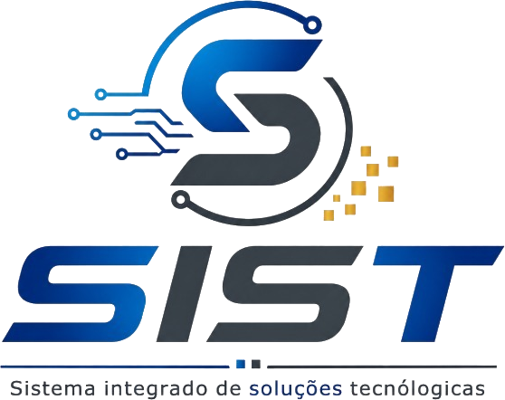
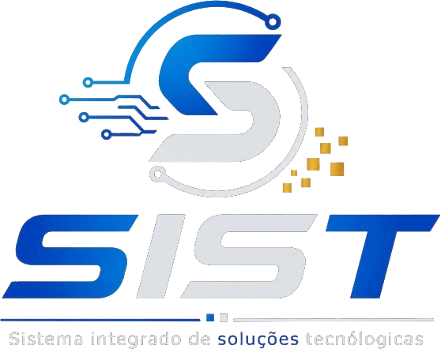

Software e consultoria para a gestão pública.
A SIST desenvolve sistemas e presta consultoria para órgãos públicos, com foco em Regimes Próprios de Previdência Social, controle interno e prestação de contas aos Tribunais de Contas.
- Sistemas (SaaS)
- Consultoria em RPPS
- Controle interno
- Capacitação


Escolha um sistema para ver os detalhes
Todos os sistemas são acessados com a mesma conta SIST.
SICI — Sistema Integrado de Controle Interno
Sistema online para institutos de previdência (RPPS). Reúne os dados mensais, a contabilidade, os prazos e a prestação de contas do instituto, e aponta as pendências de cada competência.
- Contribuições e parcelamentos
- Repasses dos entes, parcelamentos e conferência por competência.
- Contabilidade
- Importação do sistema contábil e conferência dos balancetes.
- Tribunais de Contas
- Remessas do SIGFIS (TCE-RJ) e do Aplic (TCE-MT), Prestação de Contas Anual e Relatório de Controle Interno.
- Conformidade
- CRP, CADPREV, DAIR, DIPR e o acompanhamento do Pró-Gestão RPPS.
- Riscos e auditoria
- Matriz de riscos e registro das evidências de cada verificação.
- Governança
- Conselhos, comitê de investimentos, ouvidoria e numeração de documentos.
Para contratar ou agendar uma apresentação, escreva para sist@sistsolucoes.com.br.
SIST — Sistema Integrado de Soluções Tecnológicas
Desenvolvemos e hospedamos os nossos próprios sistemas e prestamos consultoria a órgãos da administração pública direta e indireta — municípios, estados, autarquias, fundações e, principalmente, institutos de previdência.
Atividades econômicas (CNAE)
6202-3/00Desenvolvimento e licenciamento de programas customizáveis6203-1/00Desenvolvimento e licenciamento de programas não customizáveis6201-5/01Desenvolvimento de programas sob encomenda6204-0/00Consultoria em tecnologia da informação6209-1/00Suporte técnico e manutenção em TI6311-9/00Tratamento de dados e hospedagem7020-4/00Consultoria em gestão empresarial8599-6/04Treinamento em desenvolvimento profissional e gerencial
- SistemasDesenvolvimento, licenciamento, implantação e suporte, inclusive como SaaS.
- ConsultoriaGestão previdenciária de RPPS, controle interno e prestação de contas.
- Tecnologia da informaçãoIntegração de sistemas, hospedagem e tratamento de dados.
- CapacitaçãoTreinamento de gestores, servidores e conselheiros, presencial ou a distância.